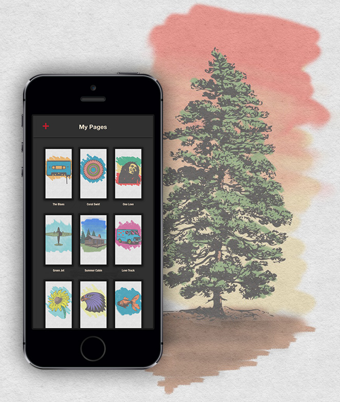
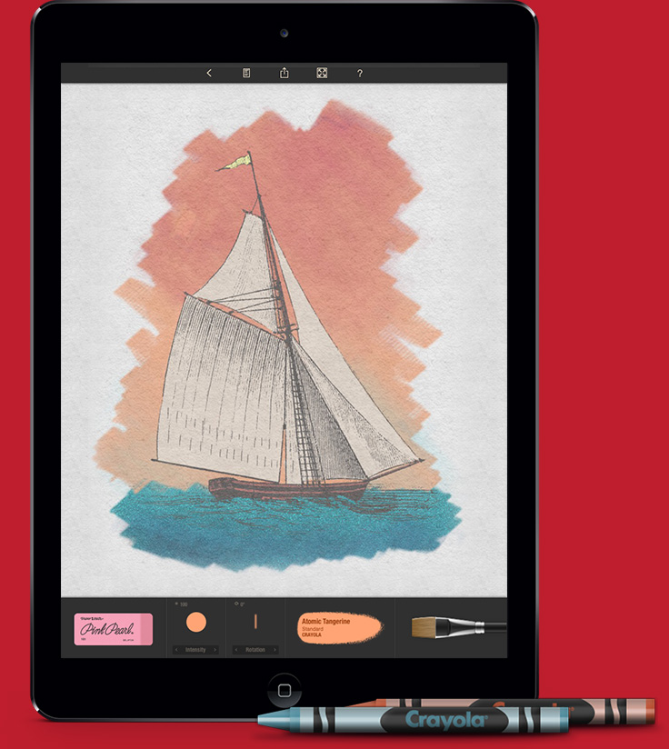
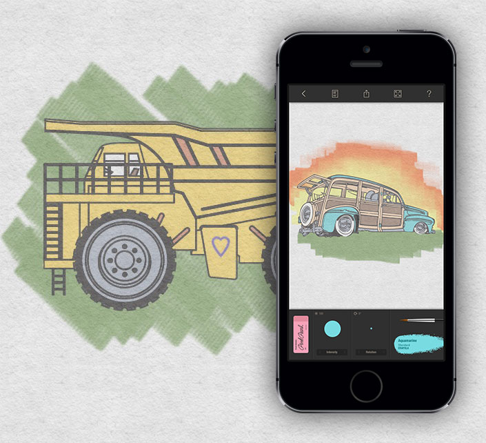
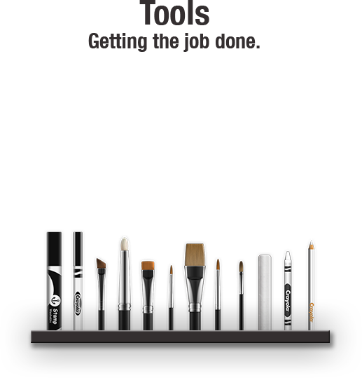
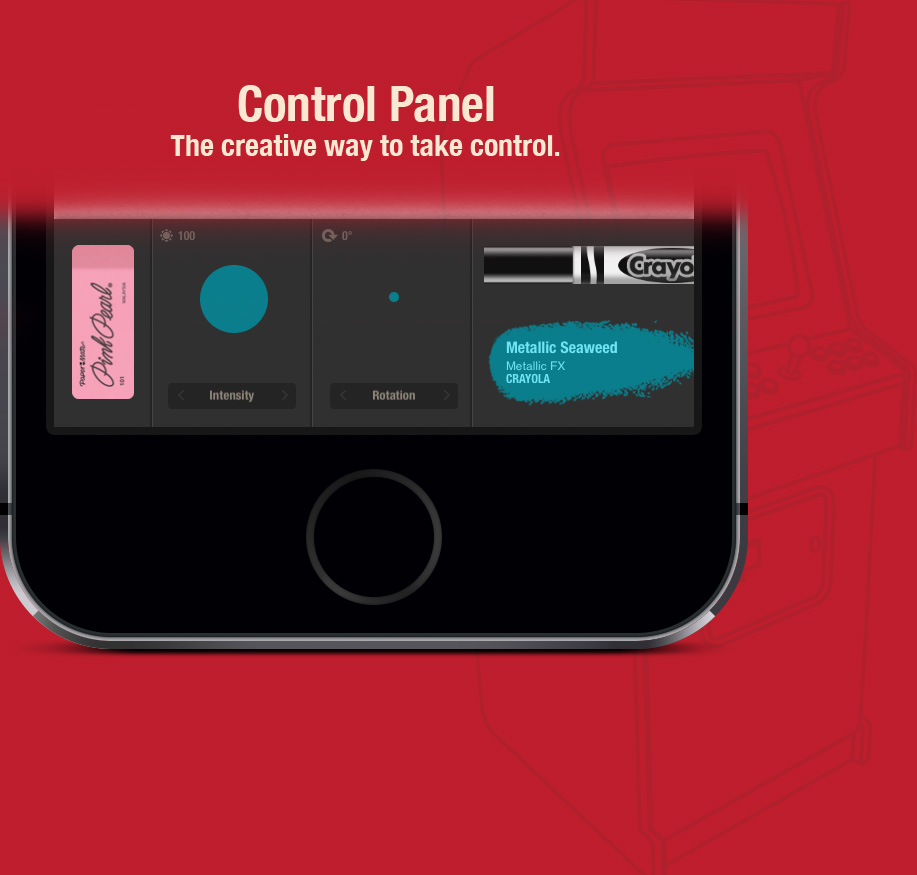

Colory has hundreds of coloring pages in seven different categories. There are many different styles to choose from so... Choose wisely.


Colory has real colors created to simulate your favorite crayons. Colory also includes some special edition colors with a metallic effect.


Crayons, markers, chalk, stamps, brushes, and more. Each tool gives you a different way to apply color to the page. Learn them, and learn well.

The control panel gives you quick access to your tools, colors, and eraser. The control panel also allows you to change the color intensity and rotate the active tool.